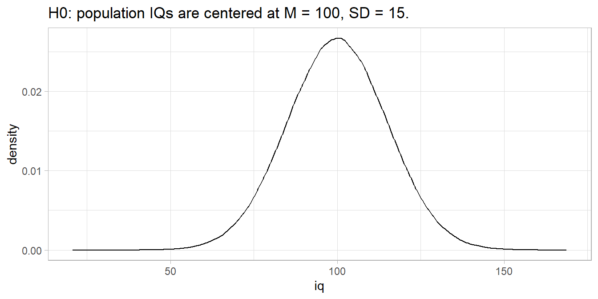
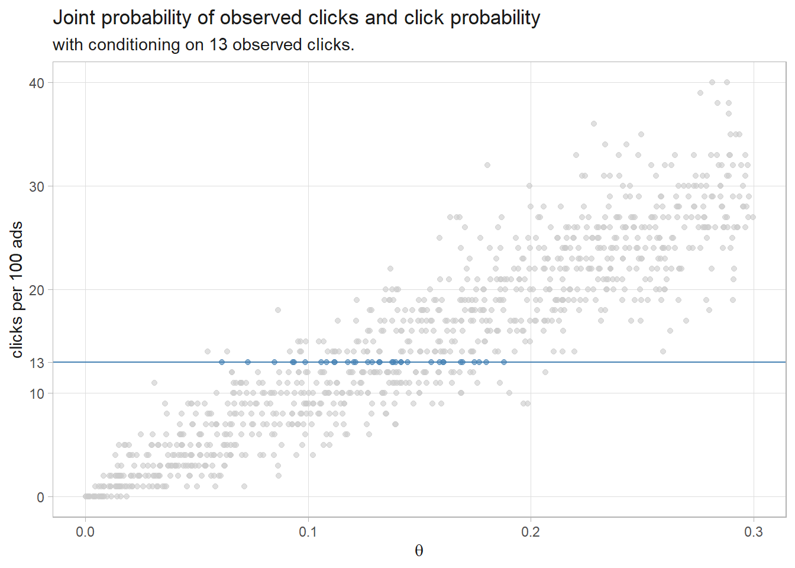

3.3 Continuous Cases
Continuing the example of inferring the parameter \(p\) used in the Bernoulli process, what if we considered all values between 0 and 1?2
When prior beliefs are best described in continuous distributions, express them using the beta, gamma, or normal distribution so that the posterior distributions are conjugates of the prior distributions with new parameter values. Otherwise, the marginal distribution is difficult to calculate. In this case, use the beta distribution, described by shape parameters, \(\alpha\) and \(\beta\).
\[P(\theta|D,\alpha,\beta) = \frac{f_\theta(D) P(\theta|\alpha,\beta)}{\int_0^1 f_\theta(D)P(\theta|\alpha, \beta)d\theta}\]
As with the discrete case, the numerator is the likelihood of observing \(D\) if \(\theta\) is true multiplied by the prior probability, but now the prior is a Beta(\(\alpha\), \(\beta\)) distribution. The denominator, sometimes called the evidence, is the marginal probability of \(D\).
The likelihood of observing \(D\) = \(a\) successes and \(b\) non-successes given a success probability of \(p\) = \(\theta\) is
\[f_\theta(D) = \theta^a(1-\theta)^b\]
The prior distribution is the probability density function of the beta distribution
\[P(\theta|\alpha,\beta) = \frac{1}{\mathrm{B}(\alpha, \beta)}\theta^{\alpha-1}(1-\theta)^{\beta-1}\]
where \(\mathrm{B}(\alpha, \beta) = \frac{\Gamma(\alpha)\Gamma(\beta)}{\Gamma(\alpha + \beta)}\) is the beta function.
The marginal distribution is
\[\int_0^1 f_\theta(D)P(\theta|\alpha, \beta)d\theta = \frac{\mathrm{B}(\alpha + a, \beta + b)}{\mathrm{B}(\alpha, \beta)}\]
Putting this all together, the posterior distribution is
\[P(\theta|D, \alpha, \beta) = \frac{1}{\mathrm{B}(\alpha + a, \beta + b)} \theta^{\alpha-1+a}(1-\theta)^{\beta-1+b}\]
The posterior equals the prior with shape parameters incremented by the observed counts, \(a\) and \(b.\)
plot_bayes <- function(alpha, beta, a, b) {
prior_ev <- (alpha / (alpha + beta)) %>% round(2)
posterior_ev <- ((alpha + a) / (alpha + beta + a + b)) %>% round(2)
dat <- data.frame(theta = seq(0, 1, by = .01)) %>%
mutate(prior = (1 / beta(alpha, beta)) * theta^(alpha-1) * (1-theta)^(beta-1),
prior_ci = theta > qbeta(.025, alpha, beta) &
theta < qbeta(.975, alpha, beta),
likelihood = theta^a * (1-theta)^b,
posterior = (1 / beta(alpha + a, beta + b)) * theta^(alpha-1+a) * (1-theta)^(beta-1+b),
posterior_ci = theta > qbeta(.025, alpha + a, beta + b) &
theta < qbeta(.975, alpha + a, beta + b))
p_prior <- dat %>%
ggplot(aes(x = theta, y = prior)) +
geom_line(color = "steelblue") +
geom_area(aes(alpha = prior_ci), fill = "steelblue") +
geom_vline(xintercept = prior_ev, color = "steelblue") +
scale_alpha_manual(values = c(.1, .5)) +
theme_minimal() +
theme(legend.position = "none") +
labs(x = NULL)
p_likelihood <- dat %>%
ggplot(aes(x = theta, y = likelihood)) +
geom_line(color = "steelblue") +
theme_minimal() +
theme(legend.position = "none") +
labs(x = NULL)
p_posterior <- dat %>%
ggplot(aes(x = theta, y = posterior)) +
geom_line(color = "steelblue") +
geom_area(aes(alpha = posterior_ci), fill = "steelblue") +
geom_vline(xintercept = posterior_ev, color = "steelblue") +
scale_alpha_manual(values = c(.1, .5)) +
theme_minimal() +
theme(legend.position = "none") +
labs(x = expression(theta))
out <- p_prior / p_likelihood / p_posterior +
plot_annotation(
title = glue("Beta({alpha}, {beta}) prior with observed evidence a = {a} ",
"and b = {b}"),
subtitle = "with shaded 95% credible interval.",
caption = glue("Prior expected value = {prior_ev}; Posterior expected ",
"value = {posterior_ev}"))
out
}Suppose you claim complete ignorance and take a uniform Beta(1, 1) prior. Recall that you observed a = 7 ones and b = 3 zeros. The posterior expected value is still pretty close!

Suppose you had prior reason to believe p = 0.7. You would model that as \(\alpha\) = 7, \(\beta\) = 3. The prior probability distribution would be \(P(\theta|\alpha = 7,\beta = 3) = \frac{1}{\mathrm{B}(7, 3)}\theta^{7-1}(1-\theta)^{3-1}\). Then after observing a = 7 ones and b = 3 zeros, the posterior probability distribution would be \(P(\theta|\alpha = 7+7,\beta = 3+3) = \frac{1}{\mathrm{B}(7+7, 3+3)}\theta^{7+7-1}(1-\theta)^{3+3-1}\).
